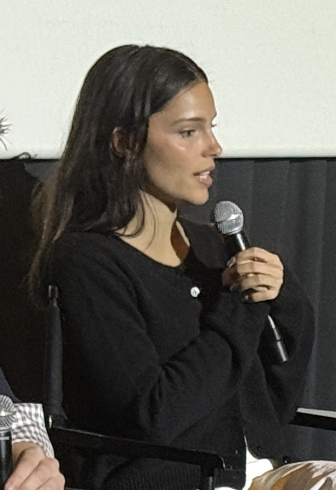

Nome Completo: Danielle Fabiola Navarette
Pseudônimo(s): Inde Navarrette
Nascimento:
3 de Março de 2001 (25 Anos)
Tucson, Arizona, Estados Unidos
Nacionalidade: Norte-Americana
Etnia: Mexicana-Australiana
Educação:
Mount Whitney High School (Visalia, Califórnia)
Redondo Union High School (Los Angeles, Califórnia)
Ocupação: Atriz
Período de atividade: 2018-Presente
Danielle Fabiola Navarrette nasceu em 3 de março de 2001, em Tucson, Arizona.
Seu pai é mexicano e serviu no Corpo de Fuzileiros Navais dos Estados Unidos, Enquanto sua mãe, Tossi Fox, é australiana e cabeleireira.
Aos 15 anos, ela já havia frequentado em 11 escolas diferentes. Após a Separação de seus pais, Navarrette foi criada principalmente em Visalia, Califórnia.
Ela frequentou brevemente a Mt. Whitney High School em Visalia antes de se mudar para a área de Los Angeles e se matricular na Redondo Union High School.
Inde é grata a ambos os lados por despertar seu interesse pela atuação, com a família materna australiana. pela tradição de sempre assistir o oscar e o seu pai mexicano pela paixão pelos filmes de terror. (Algo que positivo em longo prazo. em 2026, fez uma atuação histórica em Obsessão - 2026)
Sua mãe lhe deu o apelido de "Inde" por causa de sua natureza independente quando criança.
Obessesão (2026)
X-Men / UCM - 2028-?
Superman & Lois (2021)
13 Reasons Why
Boca de Fumo
Invertigo (2027)